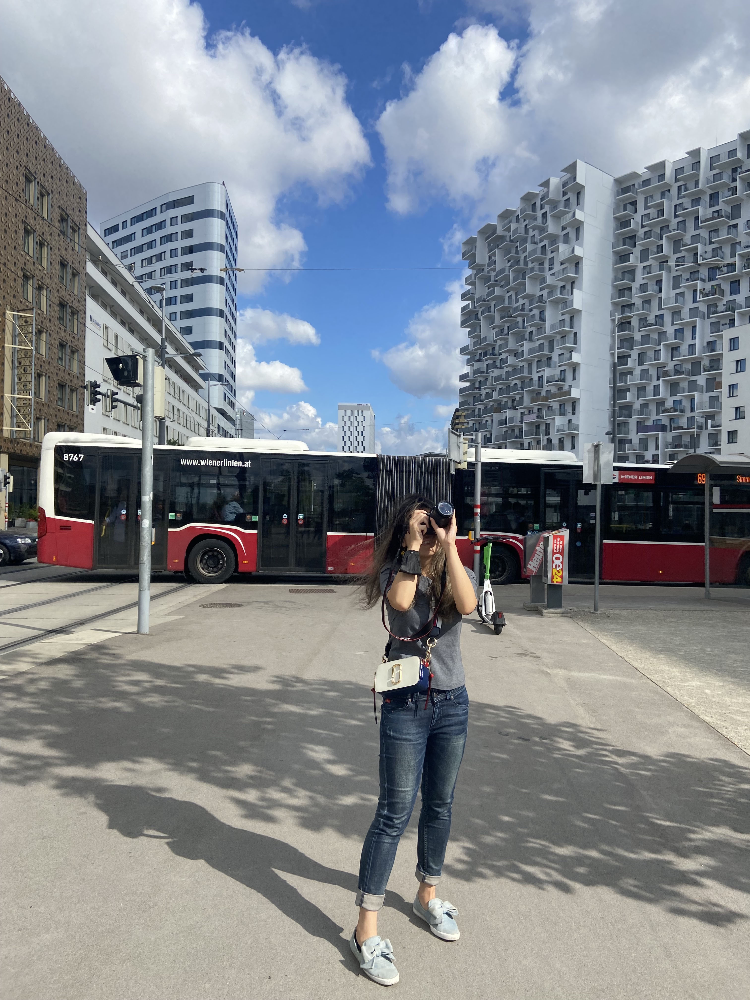

HELLO!
I'm a full-time bookworm and a part-time designer, but also a podcaster and a web designer/developer. I graduated with a Bachelor's degree in Interaction Design from University of Washington, and I'm currently studying at University of Michigan in Information. I'm passionate about storytelling through different means, be it through video, voice or words. I'm always up for a challenge and learning or trying new things. When I'm not designing or reading, I like traveling, oil painting and photography.
Let's Chat! Email me at emihuang@umich.edu
Some of my favorite books:
A Darker Shade of Magic by V.E. Schwab
An Unkindness of Magicians by Kat Howard
Mistborn: The Final Empire by Brandon Sanderson
Six of Crows by Leigh Bardugo
Pride and Prejudice by Jane Austen
